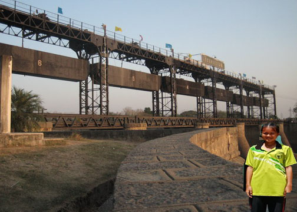

ประวัติของอำเภอท่าเรือ
อำเภอท่าเรือเดิมเรียกว่า นครน้อย ต่อมาประมาณปี 2459 ได้เปลี่ยนชื่อเป็น อำเภอท่าเรือ ใช้เป็นสถานที่จอดพัก
ขบวนเรือพระที่นั่งของพระมหากษัตริย์ ในอดีต ในสมัยรัชกาลที่5 แห่งกรุงรัตนโกสินทร์ ต่อมา สมเด็จพระบรมวงศ์เธอ
กรมพระนราธิปประพันธ์พงศ์ ได้ทรงสร้างทางรถไฟเล็กขึ้นใช้เป็นเส้นทาง รับ-ส่ง คนโดยสาร ไปนมัสการพระพุทธบาท
อำเภอพระพุทธบาท จังหวัดสระบุรี ปัจจุบันนี้ คือ ถนนสายท่าเรือ-พระพุทธบาท